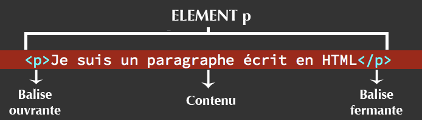

Je suis un paragrapheVSVECS
Le marsupilamiÉcouter est un animal imaginaire créé par André Franquin en 1952, dans la série Spirou et Fantasio, avant d'accéder à sa propre série, et d'apparaitre dans une autre série dérivée, Gaston. Il est doté d'une force herculéenne et d'une queue préhensile démesurée ainsi que de toutes sortes de particularités physiques et comportementales, dévoilées au fil des albums. Le marsupilamiÉcouter est un animal imaginaire créé par André Franquin en 1952, dans la série Spirou et Fantasio, avant d'accéder à sa propre série, et d'apparaitre dans une autre série dérivée, Gaston. Il est doté d'une force herculéenne et d'une queue préhensile démesurée ainsi que de toutes sortes de particularités physiques et comportementales, dévoilées au fil des albums. Le marsupilamiÉcouter est un animal imaginaire créé par André Franquin en 1952, dans la série Spirou et Fantasio, avant d'accéder à sa propre série, et d'apparaitre dans une autre série dérivée, Gaston. Il est doté d'une force herculéenne et d'une queue préhensile démesurée ainsi que de toutes sortes de particularités physiques et comportementales, dévoilées au fil des albums. Le marsupilamiÉcouter est un animal imaginaire créé par André Franquin en 1952, dans la série Spirou et Fantasio, avant d'accéder à sa propre série, et d'apparaitre dans une autre série dérivée, Gaston. Il est doté d'une force herculéenne et d'une queue préhensile démesurée ainsi que de toutes sortes de particularités physiques et comportementales, dévoilées au fil des albums. Le marsupilamiÉcouter est un animal imaginaire créé par André Franquin en 1952, dans la série Spirou et Fantasio, avant d'accéder à sa propre série, et d'apparaitre dans une autre série dérivée, Gaston. Il est doté d'une force herculéenne et d'une queue préhensile démesurée ainsi que de toutes sortes de particularités physiques et comportementales, dévoilées au fil des albums. Le marsupilamiÉcouter est un animal imaginaire créé par André Franquin en 1952, dans la série Spirou et Fantasio, avant d'accéder à sa propre série, et d'apparaitre dans une autre série dérivée, Gaston. Il est doté d'une force herculéenne et d'une queue préhensile démesurée ainsi que de toutes sortes de particularités physiques et comportementales, dévoilées au fil des albums. Le marsupilamiÉcouter est un animal imaginaire créé par André Franquin en 1952, dans la série Spirou et Fantasio, avant d'accéder à sa propre série, et d'apparaitre dans une autre série dérivée, Gaston. Il est doté d'une force herculéenne et d'une queue préhensile démesurée ainsi que de toutes sortes de particularités physiques et comportementales, dévoilées au fil des albums. Le marsupilamiÉcouter est un animal imaginaire créé par André Franquin en 1952, dans la série Spirou et Fantasio, avant d'accéder à sa propre série, et d'apparaitre dans une autre série dérivée, Gaston. Il est doté d'une force herculéenne et d'une queue préhensile démesurée ainsi que de toutes sortes de particularités physiques et comportementales, dévoilées au fil des albums. Le marsupilamiÉcouter est un animal imaginaire créé par André Franquin en 1952, dans la série Spirou et Fantasio, avant d'accéder à sa propre série, et d'apparaitre dans une autre série dérivée, Gaston. Il est doté d'une force herculéenne et d'une queue préhensile démesurée ainsi que de toutes sortes de particularités physiques et comportementales, dévoilées au fil des albums. Le marsupilamiÉcouter est un animal imaginaire créé par André Franquin en 1952, dans la série Spirou et Fantasio, avant d'accéder à sa propre série, et d'apparaitre dans une autre série dérivée, Gaston. Il est doté d'une force herculéenne et d'une queue préhensile démesurée ainsi que de toutes sortes de particularités physiques et comportementales, dévoilées au fil des albums. Le marsupilamiÉcouter est un animal imaginaire créé par André Franquin en 1952, dans la série Spirou et Fantasio, avant d'accéder à sa propre série, et d'apparaitre dans une autre série dérivée, Gaston. Il est doté d'une force herculéenne et d'une queue préhensile démesurée ainsi que de toutes sortes de particularités physiques et comportementales, dévoilées au fil des albums. Le marsupilamiÉcouter est un animal imaginaire créé par André Franquin en 1952, dans la série Spirou et Fantasio, avant d'accéder à sa propre série, et d'apparaitre dans une autre série dérivée, Gaston. Il est doté d'une force herculéenne et d'une queue préhensile démesurée ainsi que de toutes sortes de particularités physiques et comportementales, dévoilées au fil des albums. Le marsupilamiÉcouter est un animal imaginaire créé par André Franquin en 1952, dans la série Spirou et Fantasio, avant d'accéder à sa propre série, et d'apparaitre dans une autre série dérivée, Gaston. Il est doté d'une force herculéenne et d'une queue préhensile démesurée ainsi que de toutes sortes de particularités physiques et comportementales, dévoilées au fil des albums.
Lien vers Nike Lien vers Projet Retour vers haut de page